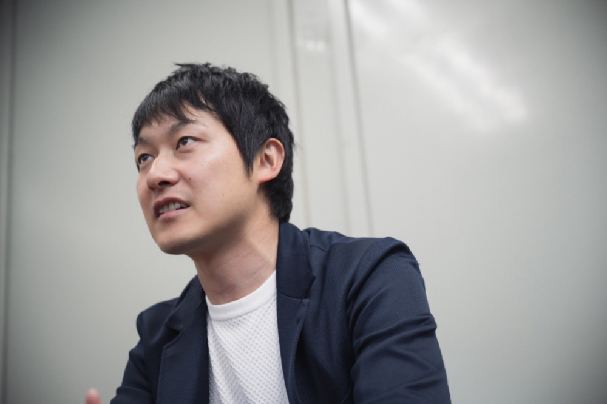
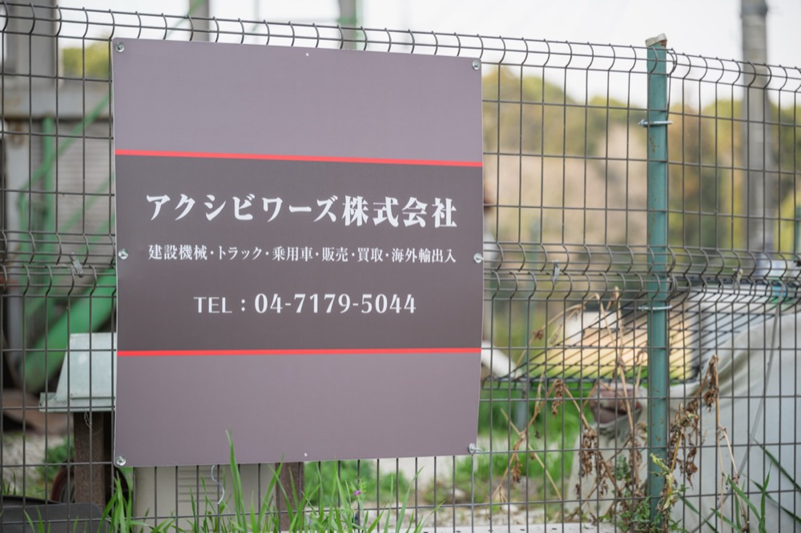
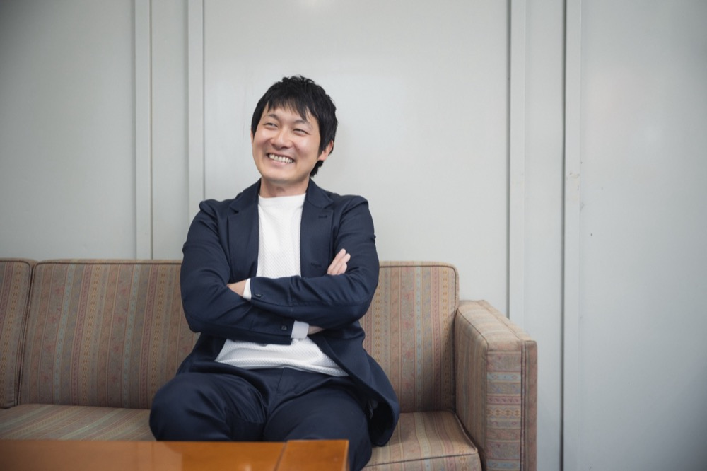
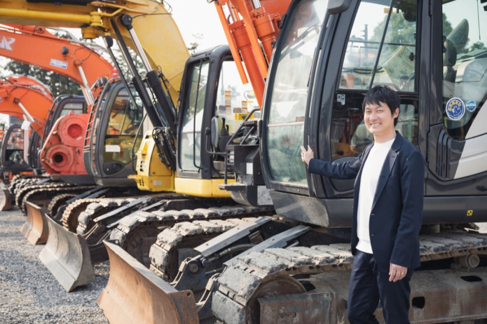

教師から経営者へ
久保 大海
アクシビワーズ株式会社 代表取締役
1988年、東京都生まれ。専修大学卒業後、中学校講師や飲食業界での経験を経て、2015年に起業。その後、2021年にアクシビワーズ株式会社を設立し、建設機械販売など多角的な事業を展開している。
企業サイトを見るTRACK 01
教師から経営者へ

時代が進み、街並みが変わっても、人が地面を掘り、土を盛り上げる行為に変わりはない。それを支える建設機械は、大きな轟音とともに、われわれの暮らしの基盤をつくる静かな縁の下の力持ちである。
アクシビワーズ株式会社は、2021年5月に千葉県柏市に設立された、自動車・建設機械の販売買取および修理を行う企業である。代表取締役の久保大海氏は、1988年東京都出身。専修大学を卒業後、非常勤講師、飲食業など異色の経歴を経て起業した人物だ。設立間もない企業ながら、中古建設機械や特殊車両の取り扱いに特化し、解体系や林業系の希少なユンボを仕入れ、独自の修理・塗装技術を駆使して市場に送り出すことで、業界内での存在感を高めている。
TRACK 02
潰れてたまるか

雇われ人生からの脱却、そして借金返済。久保の起業の動機は極めてシンプルで、ある意味衝撃的でもある。「やらないと、死ぬ。あのときはただそれだけを感じて、目の前のことに必死になっていました」と語る彼の起業時の覚悟は、並大抵のものではない。
起業したあとも大変だった。彼が事業を立ち上げたばかりの頃、取引相手から一方的に契約を破棄され、大きな損害を被った詐欺まがいの被害を食らったこともあったという。周囲には撤退を勧める者もいたが、久保はその窮地に際し、自分の中に眠っていた闘争心を発見した。「こんなことで潰れてたまるか、と思いました」強烈な反骨心が彼を奮い立たせた。この出来事をきっかけに、久保は経営に対して今まで以上にシビアに数字を追求するようになった。ただ漫然とビジネスを続けるのではなく、利益を生むための戦略と緻密な計画を徹底して練り上げ、短期間での業績改善を実現したのだ。


TRACK 03
口ではなく行動で語れ
経営に対する彼の姿勢は一貫して「口動より行動」、つまり理想や目標を語ることは誰にでもできるが、それを現実のものにするには具体的な行動が絶対的に必要だと、彼はつねに強調している。その信念を証明するように、久保は創業後間もなく中古車販売から始まり、建設機械販売、中古車や建機の修理業、軽運送業と、次々に事業領域を拡大していった。何か一つがうまくいかないときも立ち止まることなく、新しい事業機会を模索し、積極的な挑戦を継続してきた。その結果、現在では業界内で確かな地位を築きつつある。
現在、久保が最も力を注いでいる建設機械販売事業では、林業や解体業界向けの特殊な機械を仕入れること自体容易ではないものの、久保独自のネットワークを活用して希少な機械を入手し、それら一つひとつに、高い修理技術と丁寧な再生工程を経て、新たな価値を生み出している。古びた機械を再び生命を吹き込むかのように再生させる彼の手腕には、絶大な信頼がある。そして他社が手掛けられないような難易度の高い案件にも積極的に挑戦し、その成功が市場での評価をさらに高めている。
地域に根差した経営も、久保の大きな特徴だ。千葉県柏市に本拠を置いた理由として彼はこう述べている。「やはり首都圏のなかでは土地が安価であるという地理的要因もあります、ただやはり、この土地に互いに助け合える仲間がいるのが大きいですね」。久保は日常的に地域の人々と交流を深め続け、そして困ったことがあれば、お互いに助け合いながらビジネスを展開している。こうした地元との強固な絆が、企業の安定運営と急速な成長を支えているのだ。